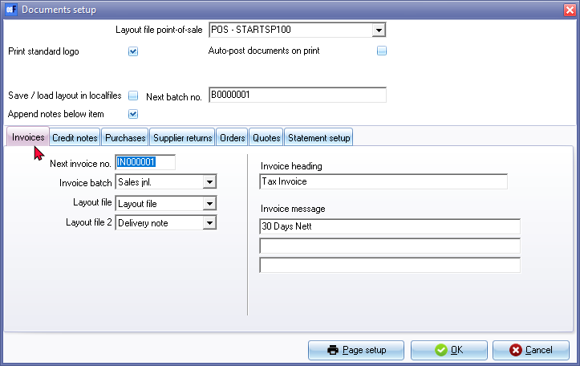

Documents setup
The "Documents setup" option in osFinancials allows you to set up sales documents such as invoices, credit notes and quotes for debtors (customers / clients) as well as purchase documents such as purchases, supplier returns and orders for creditors (suppliers / vendors).
You can also enter global statement messages on the Statement setup tab to be displayed on statements for debtors (customers / clients).
Before you can start generating documents in osFinancials, you need to set up the documents. If you have created a new Set of Books in osFinancials, the basic settings in the documents setup will already be set up for you. However, it's recommended to review and customize each document type according to your specific needs and requirements.
|
|
By default, osFinancials assigns document numbers that begin with 000001 and are prefixed by 2 alphabetical characters - IN for invoices, CR for credit notes, PU for purchase documents, SR for supplier return documents, OR for orders, and QU for quotes. However, you can change this to fit your requirements. Afterwards, osFinancials will automatically allocate document numbers in the numerical sequence they were generated. |

If you have created multiple users in Setup → Access control (Setup ribbon), you can choose to use general numbers for users and select a default user. This will enable document numbers to be generated by each user.
|
|
If your business or organization is registered as a company, close corporation, non-profit organisation, non-governmental organisation, or any other type of organisation that requires your registration number to be displayed on all documentation in accordance with legislation, you must enter that registration number in the "Company reg. no." field of the Setup → Company info (Setup ribbon). This should be done before processing any documents. |

|
|
If you are registered as a VAT/GST/Sales Tax vendor, you must enter your Tax (VAT/GST/Sales Tax) registration number in the "Tax reg. no." field of the Setup → Company info (Setup ribbon). This should be done before processing any documents. |
|
|
Before you start processing any documents in osFinancials, it is important to check and set the document numbers, batches (journals), headings, and messages. You should also ensure that your document headings are displayed correctly in accordance with your country's tax legislation, especially if you are registered for VAT/GST/Sales Tax. |
To set documents:
- On the Setup ribbon, select Setup → Documents setup. The "Documents setup" screen is displayed:

- The global settings to configure for document processing, is as follows:
- Layout file point-of-sale - This is the default layout file ("POS-STARTSP100" layout file for a till-slip printer) used in the standard point-of-sale feature (Setup → Point-of-Sale (Setup ribbon) and POS Invoice (Input → POS Invoice (Default ribbon).
- Print standard logo - The logo field is included in the document layout files, debtor statements and creditor remittance advices. To display the logo, you need to load the logo in the “Company info - Options” screen.
- Auto-post documents on print - By default, documents in osFinancials require manual updating (posting) to the ledger. However, if you choose to select the option for automatic updating (posting), the system will automatically update (post) the documents to the ledger when they are printed.
- Save / load layout in localfiles - This settings is optional for a network environment when the settings of the documents (layout column visible, etc.) needs to be stored at a central location.
- Append notes after item - By default, this option is selected. When processing documents, and a comment F9: Comment is inserted in a document, the comment is added one line below the selected stock item in the document lines.
|
|
By default, comments is inserted below a selected item. The option "Append notes below item" (Setup → Documents setup (Setup ribbon)) is added to set the preference if comments should be added before, or below (default option), a selected item when processing documents and printing comments on layout files. The default "Append notes below item" setting is selected (ticked). It will display on document lines and document layout files as follows:
If the "Append notes below item" setting is not selected. It will display on document lines and document layout files as follows:
|

- Next batch number - The batch numbers are are automatically generated starting from the number in this field. These batch numbers are generated for batch transactions as well as the transactions in documents posted to the ledger.
- To check or amend the document numbers, batch types (except in the case of Orders and Quotes), select the paper type, change the headings, if necessary, and to enter the messages you wish to be displayed on the documents, you can select each of the following documents:
- Debtor (customer / client) documents:
- Invoices: record the sales transactions with your debtors (customers / clients) from your stock code file. Once updated (posted) to the ledger, this document will record the sales, cost of sales transactions in the general ledger and update the debtor's ledger.
- Credit notes: record the sales returns received from your debtors (customers / clients) from your stock code file. Once updated (posted) to the ledger, this document will reverse the entries or part of the transactions issued and posted on the Invoice.
- Quotes: record the promise to sell specified goods or stock items at certain prices and quantities, if the debtor (customer / client) accepts the quote within a specified period. Once a quote is accepted, it can be confirmed and converted to an Invoice. Quotes cannot be updated (posted) to the ledger.
- Creditor (supplier / vendor) documents:
- Purchases (Goods received notes): record all the purchase transactions with your creditors (suppliers / vendors) from your stock code file. Once updated (posted) to the ledger, this document will record the purchases in the stock ledger, the stock control account in the general ledger and the creditors account in the creditor's ledger.
- Supplier returns: record the purchase returns returned to your creditors (suppliers / vendors) from your stock code file. Once updated (posted) to the ledger, this document will reverse the entries or part of the transactions issued and posted on the Purchase document (Goods received note).
- Orders: record the stock items or goods, which are ordered from a creditor (supplier / vendor). Once an order is fulfilled, i.e. the stock items or goods are received, the order can be confirmed and converted to a Purchase document (Goods received note). Orders cannot be updated (posted) to the ledger.
- To add or edit a global statement message that will be displayed on all debtor statements, go to the Statement setup tab. Here, you can enter up to three (3) lines of text that will appear on every debtor statement you print using the Reports → Debtors → Debtor statement feature. This is a useful way to communicate important information to your debtors, such as payment terms, contact information, or other relevant details. Once you have entered your statement messages, they will be automatically included on all debtor statements you generate going forward.
- Click on the OK button to save your changes and close or exit this screen.
If you click on the Page setup button, the following screen will be launched: